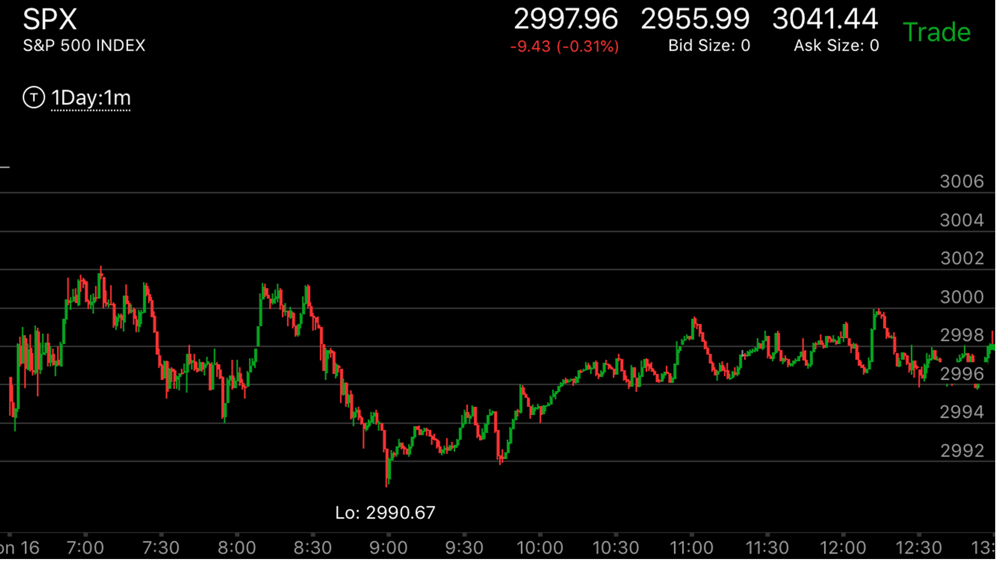

反转后，一开始就速度很快，然后走平，利用反向运动跨越走平成反向加速后
以升势为例，一个走势处于升势，但是它需要创新低。结果它不断走低后，创新低，立刻反弹，然后走平后继续反弹。然后下跌，跨越走平点，形成向下的加速走势。然后继续上涨
下跌也有类似的走势。

图示:9：00大跌，形成了，立刻反弹，速度很快，9：20走平，然后大涨。9：40，它快速越过了走平点。这样就形成了向下加速的走势。 说明要大涨了。